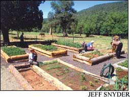
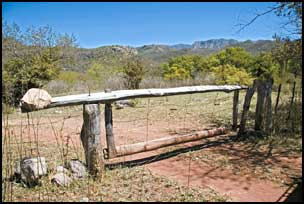
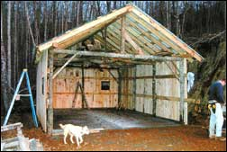

My husband, Ben, and I fulfilled a lifelong dream in 1988 when we retired and moved to the McGowen Circle Ranch, in a 5,400-foot-elevation valley in the Sierra Anchas Mountains of central Arizona.
We are self-sufficient with solar power, spring and well water, a fireplace and a wood-burning stove. Our concessions to the modern world are a radiotelephone, propane refrigerator and stove, and satellite TV. Our house faces south, taking advantage of passive solar design to keep it warm in the winter.
Gardening at this elevation presents us with many challenges - late and early frosts, drought, extreme heat and grazing wildlife.
Our most recent gardening challenge came when I could no longer walk and had to use a wheelchair - that made it impossible to work in the garden. A good friend suggested building raised garden beds. To build the beds, we harvested logs from beetle-killed trees that were partially burned in the 2004 Willow fire in Payson, Ariz.
Not only do the raised beds solve my problem of reaching the plants to water, weed and till, but the paths between the beds don’t get muddy. Also, the gravel ground cover keeps the paths free of weeds. The soil in the beds is a mixture of forest mulch, dirt, sand and horse manure. We like the raised beds so much that we are building more.
Carolea McGowen
Globe, Arizona
I thought I’d have to give up gardening after a knee injury last year because the constant bending was just too painful - and I didn’t have the time or energy to build fancy raised beds. Being a hard-core gardener, I began exploring other possibilities and found a solution: Square straw or hay bales can be easily arranged into a big rectangular shape. Then, fill the inside of the rectangle with compost and top it with a 10- to 12-inch layer of soil. Presto - we have a raised garden bed! The bales even make good seats.
I would really welcome more tips from “physically challenged” readers.
(I hate the word “disabled.”) There are more of us than some may realize, and we’ll do anything to continue gardening. My 85-year-old father, a retired Illinois farmer recovering from a hip replacement, has even mounted a special rack on his walker to hold garden seeds and tools.
Shirley Phillips
Stilwell, Kansas
Long gates frequently sag and drag on the ground, making opening them difficult. This gate, with the stone counterbalance, was built in the Mexican mountain town of Alamos. A large rock counterbalances the weight of the mortise-and-tenon frame, which pivots on a pin inserted into the left fence post and swings open with a slight push.
Lloyd Kahn
Bolinas, California
I’ve enjoyed the benefits of free-range eggs over store-bought ones, but when I recently tried to make deviled eggs, the free-range eggs did not peel nicely. I have heard that some naturally raised meats need adjustments to the cooking time depending on the cooking method. Is the same true for eggs?
Suzanne Johnstone
Silex, Missouri
Eggs that are seven to 10 days old will peel easier after boiling than fresh eggs. To avoid the green ring that sometimes forms around the boiled yolk, do not overcook the eggs. Bring the eggs and water to a boil, then turn off the heat and let the eggs sit about 12 minutes in the hot water.
Don Schrider of the American Livestock Breeds Conservancy offers this tip from his Amish/Mennonite neighbors: Boil the eggs as above, drain the water from the pan, put the lid back on and give the pan a few shakes as if you were making popcorn (forward and back, as well as a little up and down). Next, add cold water to cover the eggs, let sit for one or two minutes, drain and peel. At this point, they should peel easily. - Mother
I live in the storm-prone Ozark Mountains, where it’s not uncommon to have a few roof shingles torn loose by the wind. Because roof damage and leaks tend to happen at inopportune times, it’s worthwhile for a homeowner to be prepared.
I keep a roof-patching kit in a sealable plastic container with the following items: multiple tubes of wet/dry roofing-repair caulk and a caulking gun, a narrow putty knife, a utility knife, a hammer, shears for cutting shingles, a compact pry bar and a box of roofing nails. In addition to the kit, an extension ladder is indispensable for roof work. It isn’t a bad idea to keep some matching replacement shingles on hand, either.
When you consider the difficulties that come from a wet, ruined ceiling, this preparation isn’t much trouble.
Dennis Divine
Joplin, Missouri
Would you like to have a nest egg for emergencies? Here’s an old-fashioned savings plan that does not put a strain on your budget. My grandmother used to call it her “cookie jar fund.” It’s a simple and easy-to-do plan, and over a one-year period, it really adds up. Every day for a year, I placed my pocket change plus $1 in a mason jar. Here’s how it adds up if you faithfully contribute every day:
Joseph Williams
Sanderson, Florida
After moving to our North Carolina mountain cabin, we looked to Mother Earth News for ideas before building our garage/shop. After spending hours at a local restaurant drawing plans on the place mats, my husband and his buddy Jim started a rustic but economical project. They planned to erect an 18-by-24-foot pole barn, made mostly of logs, with a steel roof.
Their first job was to go into our woods and cut hickory, poplar and oak trees for the cross beams. Then they went to a local sawmill and bought 2-by-10-foot yellow pine for the rafters and assorted seconds for the siding. All of the sawmill lumber was irregularly sized leftovers, costing two-thirds less than usual.
Next, they found a 16-by-17-foot insulated garage door, with opener, for $50 at a yard sale. They installed several windows, also purchased at yard sales, for extra light and ventilation. And they had the floor of the shop poured, for a very reasonable price, by a local cement company. The only things purchased from a retail lumber company were nails, screws and eight 2-by-10-foot pressure-treated boards.
The shop has 9-foot sidewalls with a 45-degree pitched roof that offers us lots of good storage space. We ended up with a versatile and unique shop for about $2,000. It fit our budget; it’s almost all natural, and the best part - it’s done!
Bette Balmer
Franklin, North Carolina
Once in a while, I find beautiful cotton/polyester-blend sheets at flea markets and yard sales. I use them to make blouses. They even make terrific little girls’ dresses. The material does not require ironing and is cool and soft. With the price of fabric so high, this has proven to be a money saver for me.
Janet Neumann
St. Louis, Missouri
For the first time ever, our goats stopped producing milk in the winter while waiting to deliver. We still had milk customers, however, so one morning my husband got the idea to milk the sheep. Wow, what wonderful milk!
Our customers were game to try it, and they loved it. Even my mother, who does not like goat milk, really enjoys it. The sheep milk is so rich and creamy, as well as slightly sweet - it makes the best frozen-fruit shakes. Our customers do not even mind having to pay more for it than they would for the goat milk.
We raise Katahdin hair sheep that shed their coats and never have to be sheared. My husband milks them by hand along with our goats. The sheep are very smart and learned in a couple of days to get on the milk stand, where they receive grain as they are milked.
I have been making goat cheese for 16 years and have started trying my hand at making cheese from our sheep’s milk. It is a little trickier to make, and it’s just about impossible to find recipes for this type of cheese. If any Mother Earth News readers have recipes for sheep cheese, I’d be glad to have them. The yield from these cheeses is about twice as much as goat cheese, so we actually get more cheese for the same amount of milk. Sheep’s milk has about 20-percent solids and 9-percent butterfat, while goat’s milk only has 12-percent solids and 4-percent butterfat.
Leona Hanson
Mountain View, Missouri
You can send your sheep-cheese recipes to letters@MotherEarthNews.com; we will post the recipes at www.MotherEarthNews.com. - Mother
|
 |
 |
|
|
 |
|
|